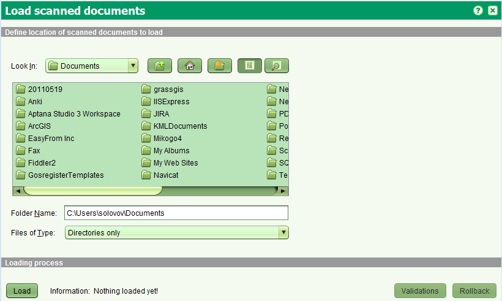

Массовая загрузка отсканированных документов
Эта функция позволяет загружать существующие отсканированные документы
(например явочные регистрационные документы) в цифровой архив SOLA
и как следствие предоставлять легкий доступ к этим документам командам системной регистрации.
Загрузка набора отсканированных документов
Этот шаг в идеале происходит на стадии начала системной регистрации.
Отсканированные документы должны быть скопированы на рабочую станцию для последующей загрузки
или создана сетевая папка доступная пользователю SOLA. Каждый набор должен быть в папке,
с именем типа документа из таблицы source.administrative_source_type

Шаги
На этом экране, определяется тип назначения. На данный момент имеются два типа:
- Запустите SOLA Массовые Операции
-
На панели инструментов выберите инструмент загрузки отсканированных документов.
-
Выберите папку, в которой есть вложенные папки, содержащие определенный набор
документов одного типа (например вложенная папка "ипотека" для отсканированных документов ипотеки.
Другая вложенная папка с названием "аренда" и т.д.).
Вы должны выбрать главную папку, содержащую вложенные папки в то время как выпадающий список "Тип Файла"
должен иметь значение "Только папки".
-
Нажмите кнопку "Загрузить". Имя вложенной папки должно совпадать
с именем типа документа из таблицы source.administrative_source_type.
Отсканированные файлы документов могут быть PDF, TIF, TIFF или JPG. Если одно из этих условий
не выполняются будет отображено сообщение и осуществлено перенаправление на экран валидации
для получения более подробных сведений об ошибках.
-
Загрузка пространственных объектов
Эта функция используется если вы хотите загрузить пространственный объекты, такие как дороги, поворотные точки, населенные пункты и тд.
Далее выберите тип объекта и какое поле будет использоваться для подписи.
Смотрите также